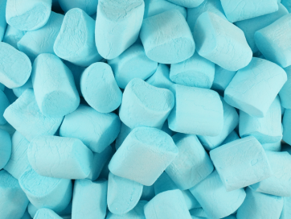
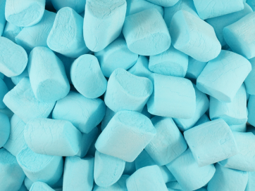

I love blue because it's my idol's favorite color. And I also love the light blue color of the sky when the air is fresh!

Hey Guys! This is my home page. I am going to introduce my favorite three colors to you and post some related images to you!
I love blue because it's my idol's favorite color. And I also love the light blue color of the sky when the air is fresh!

Pink gives me a sense of positive and soft. I have lots of pink stuffs. The cover of my laptop is pink and many of my clothes are in pink color.
Light yellow is super soft. I can always feel soft and relaxed when I see lightyellow stuffs. I really love chicks by the way!